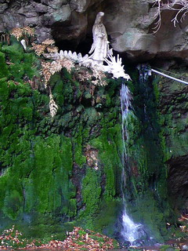

南阿蘇村に清水滝という小さな滝がある。
その滝にとんでもないモノがあると聞いて行ってみた。
清水滝は阿蘇山の南面にある小さな滝だ。
…ちなみに凄く分かり難いところにあるので詳しい所在とか行き方とかを質問しないようお願いします…
火星のような阿蘇の山中を地図にもない一本の道が通る。
これまで色々なトコロに行って来たがここまで辺鄙な所は中々なかったぞ。
最後の民家を見てからどのくらい走ったのだろうか。いつ道が途切れるかヒヤヒヤし始めた頃、ようやく清水滝に到着する。
急な坂道を降りていくと谷底に何やら見えてきた…
ぬおおお、なんじゃこりゃあ！
半径数キロにわたって人など住んでいないであろう谷底にいきなり現れる民家風の建物。そしてその民家にぴったりと寄り添うように巨大なコンクリの白い象さんがいるじゃないすか！

さらに谷底に流れている沢の向こう側にも何やら怪しげなコンクリ像がちらほら。
うむむ。こんな秘境といってもいいような場所にコンクリ像かあ…どうやって作ったんだろう…
つか電気は?! ガスは?! 上下水は?!
近付いてみるとべったりと苔がのっている。
しかもこの恐い顔ったら…
並み並みならぬ造型センスである。
きっとコレを作った人は天才に違いない。
この建物の入口であろう象さんの頭の下の入口から声を掛けてみるが誰もいない。
外から中の様子を伺ってみるが、一体何の建物なんだかすらさっぱり分からない。
まあ、しかしそうは言っても象さんを背負った民家などあるはずもないので、ここは宗教施設と見た方が無難であろう。
谷底に降りて象さんを見上げてみる。
窓の取り付きなどから見て、普通の木造の建物にコンクリを擦り付けて無理矢理象さんにしてしまったようだ。
象さんの頭上には小さなコドモと観音サマ。これまた御顔の微妙なりけり。
建物の片隅には幣束（？）が立てられた蛙さんが。
谷底に建つ建物、その一部を侵食した象さん。繰り返すようだが半径数キロに人は住んでいない。
で、象さんの奥に目をやれば小さな滝が見える。
↓画面の右奥、注連縄のようなロープの奥にあるのが清水滝である。
しょぼくれた滝だが、その手前の苔は圧巻だ。
色鮮やかな苔から阿蘇山の伏流水が滲み出ていてまるで水の簾のようで、思わず見とれてしまった。
でもその美しい光景も左右に視界を広げればご覧の通り。

「あのコンクリ像さえなければ…」と、ホゾを噛んでいる貴兄も多いのではなかろうか。
ちなみに先日、某写真ギャラリーでこの滝の写真が展示されていたが、絶妙なトリミングでコンクリ軍団は見事にフレームアウトされていました…
谷底の沢沿いには何だか情けない赤い鬼が若干内股気味に立っている。
何故か三本指。妖怪人間か？
そしてお召し物はトラのパンツ。チャンピオンベルトみたいですね。
ふと見ると崖の中腹に穴が空いていて、そこを通って行けば苔の上の不動明王のところまで行けるようだ。
というわけで洞窟に入ってみる。
内部は比較的広く、比較的明るい。
象さんの上に載っていた観音像とかなり芸風の近い三尊像があった。
榊や供え物があったので、定期的に誰かが参拝に訪れているのだろう。
洞窟はさらに続き、その先は真っ暗だったのだが、灯りを照らしてみると石碑があった。
石碑には難しすぎて意味が判らない文言が刻まれていた。修行不足でスミマセン。
三尊像があった場所から不動明王、さらに対岸の象さんが良く見える。
象さんもあと100年位修行を積んだら奇麗な苔に覆われるんだろうか…ないですね。
不動明王はペイントも鮮やかで直下の苔と激しい対比をなしている。
苔の奥のほうには水を吐く龍と観音像も。

確かに信仰の場としてはこれ以上の環境は中々ないだろう。
人っ子一人いない山中の美しい滝のほとりにある象さんの家を見ていると何とも不思議な気分になってくる。
まるで20世紀に出現した現代版おとぎ話のようではないか。
現実なのか幻なのか、あの世なのかこの世なのか、今思い出しても妙に現実感の薄い光景であった。
さて。
実は清水滝の象さんの数キロ南には腰が抜けそうな不思議な門がある。
…ダブル龍宮門。しかも顔付き。
これまた並み並みならぬ造型センスである。
南阿蘇村の中心部から来ると、左の門を潜れば清水滝方面への道に続いている（とはいってもスルッと行けるわけではないが…）。
門の左右にはコンクリの赤鬼青鬼、そして中央にはお地蔵さんが立っている。
「人工流産によって堕した子供の霊をお救い下さる御地蔵様」だそうです。
左右の鬼の金棒とお地蔵さんの錫杖が見事マッチング。
先ほどの清水滝の鬼とは芸風が違うのだが、トラのパンツに顔がしっかり付いているところを見ると何らかの関係がありそうだ。
まあ、トラのパンツというよりはキツネのオムツみたくなっちゃってますが。
ここは清水滝へのゲートウェイと見て間違いなかろう。
門のお顔の方もこんな感じ。獅子なんでしょうか。
右の門に食われ…じゃなくて、潜った先には不動明王の石像がいらっしゃる。
その隣は広場のようになっていて立派な大仏さんが鎮座してました。
門の手前には
赤黄のツートンカラーの円堂が。八雲権現神社とある。

この山門に関して後日調べてみると「信仰風土記 南阿蘇高森」という本に記述があった。
一部を抜粋すると
「…二つの楼門、その上の地蔵、馬頭観音、不動明王などの巨大な塑像がある。すべて最近の造営にかかる。神、仏、霊等の混交した宗教施設であり、現世祈祷を主としている。地元では却って関心がうすい。」
とある。神仏霊ですか…
この本の出版が昭和57年なのでその頃に作られたものなのだろう。
尚、この本には清水滝の象さんの記述も見られる（ここの山門との関連性には触れていない）ので、象さんもそれ以前に造られた事がわかる。
更にダブル山門から南下して南阿蘇村の中心地に近付くとこのような龍宮門がある。
ここには鬼さんなどのコンクリ像はなく、造型もかなりちゃんとしている。
しかしこの門の先には先ほどのダブル山門しかない（かなり離れているが）。
従って清水滝への総門と思われる。
門の隣の庭には宝剣を中心に不動明王と三十六童子がズラリと並んでいた。
となりの東屋の天辺には十字架が…何だあ？

この後、南阿蘇のあちこちで清水滝の象さんの事やダブル山門の事を聞いてみたのだが、ほとんどの人は知らない、そういえばあったかも、何か変なのありますね〜、的な反応しかなかった。「地元では却って関心がうすい」ってヤツ。
でもそんな村人の知らないところで村の南北を貫く巨大な宗教軸がひっそり形成されていたりする。
神仏霊同様、見える人にだけ見える、という事ですかねえ。
情報提供は男岩鬼蔵無さんです
2007.12.